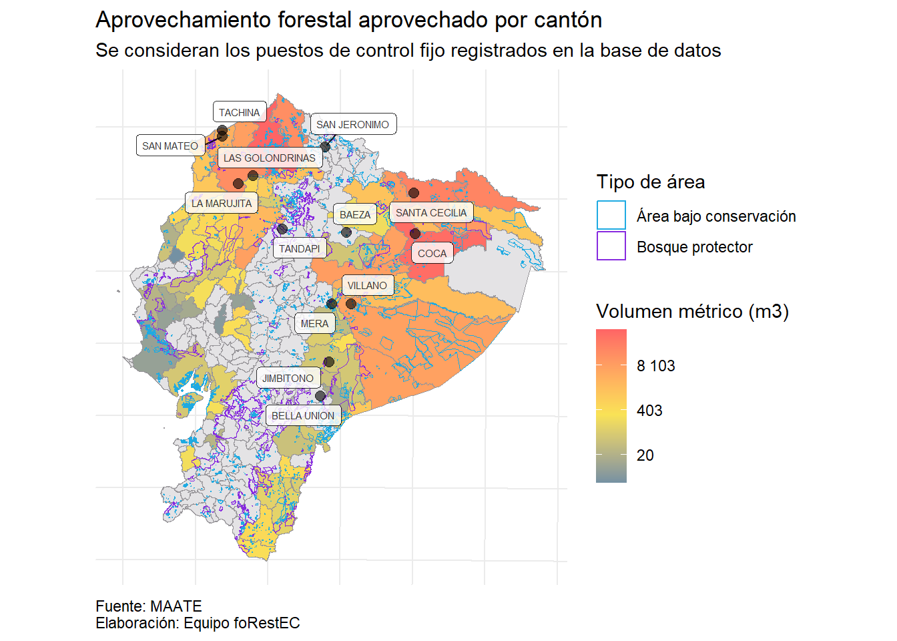

Data Jam 2da Edución Evaluando a los puestos de control forestal en Ecuador
Equipo foRestEC
Authors
Alex Bajaña
Brad Puglla
Luis Portilla
Software y librerias
Mostrar el código
# Lectura de excel:library(readxl)# Manejo de las bases:library(tidyverse)# Mapas:library(sf)# Limpiar bases de datos:library(janitor)# Match por similaridad:library(stringdist)# Unión por similaridad:library(fuzzyjoin)# Adicionales para mapas:library(ggsn)# Adornos de graficos:library(scales)# Arreglar labels en mapa:library(ggrepel)# Tablaslibrary(gt)
El reto se realizo con R:
Mostrar el código
R.version
_
platform x86_64-w64-mingw32
arch x86_64
os mingw32
crt ucrt
system x86_64, mingw32
status
major 4
minor 2.3
year 2023
month 03
day 15
svn rev 83980
language R
version.string R version 4.2.3 (2023-03-15 ucrt)
nickname Shortstop Beagle
En los casos en que la des agregación sea a nivel de cantón empleamos join_var_can para unir la información de cada cantón. En el caso de parroquias empleamos join_var_par.
Base de datos del aprovechamiento forestal del 2022:
Mostrar el código
# Limpieza de nombres:tabla_aprovechamiento <- tabla_aprovechamiento %>%clean_names()# Agrupación y cálulo:tabla_aprovechamiento <- tabla_aprovechamiento %>%group_by(provincia, canton) %>%summarise(volumen_aprobado =sum(area_del_predio_has, na.rm = T),volumen_aprovechado =sum(area_del_programa_has, na.rm = T)) %>%ungroup() %>%mutate(exceso = volumen_aprovechado - volumen_aprobado)# Creación variable de unión:tabla_aprovechamiento <- tabla_aprovechamiento %>%mutate(join_var_can =str_c(provincia, canton, sep ="-"))# Unión con el diccionario:tabla_aprovechamiento <-stringdist_left_join(x = dpa_can,y = tabla_aprovechamiento)
Base de datos de la atencion a denuncia de talas del 2022:
Mostrar el código
# Limpieza de nombres:tabla_denuncias <- tabla_denuncias %>%clean_names()# Agrupación y cálulo:tabla_denuncias <- tabla_denuncias %>%group_by(provincia,canton) %>%summarise(denuncias =n(),suma_vol_retenido =sum(volumen_retenido,na.rm = T))# Creación variable de unión:tabla_denuncias <-tabla_denuncias %>%mutate(join_var_can =str_c(provincia,canton,sep ="-"))# Unión con el diccionario: tabla_denuncias <-stringdist_left_join(x = dpa_can,y = tabla_denuncias)
Base de datos de los puestos fijos de control para el 2022:
Mostrar el código
# Limpieza de nombres:tabla_puestos <- tabla_puestos %>%clean_names() # Agrupación y cálulo:verificaciones <- tabla_puestos %>%group_by(pfcfvs) %>%summarise(frecuencia =n(),cubicado =sum(cubicado_vtotal, na.rm = T),retencion =sum(vol_ret,na.rm = T))# Unión con el diccionario de puestos fijos de control: verificaciones <- verificaciones %>%left_join(diccionario, by =c("pfcfvs"="codigo"))# Agrupación y cálulo:origen <- tabla_puestos %>%group_by(origen, origen_provincia) %>%summarise(frecuencia =n(),cubicado =sum(cubicado_vtotal, na.rm = T),retencion =sum(vol_ret,na.rm = T))# Creación variable de unión:origen <- origen %>%mutate(join_var_can =str_c( origen_provincia,origen, sep ="-"))# Unión con el diccionario: origen <-stringdist_left_join(x = dpa_can,y = origen)
¿Que tan efectivo es el control forestal en el Ecuador? Vamos a averiguarlo con las librerías ggplot2 y sf de R
En Ecuador hay un total de 14 puestos de control fijo para revisión del recurso forestal. De acuerdo a los polígonos provistos, hay un total de 2724 áreas bajo conservación (Acuerdo-Ministerial-Nro.-MAATE-2022-066) y 170 áreas consideradas como bosques protectores (Definición).
Vamos a visualizar los puestos de control y estas áreas empleando la librería sf de R. En este caso estamos vamos a agregar tres capas geográficas. Utilizaremos el shapefile de cantones en nuestros gráficos.
Da click en Code para seguir el paso a paso.
Mostrar el código
# Empezamos con un ggplot() que va a tener datos independientes en cada capa:plot_nacional <-ggplot() +# Cantones:geom_sf(data = shape_can,size =0.1,fill ="#E4E3E5",color ="#979599") +# Bosques protectores:geom_sf(data = bosques_protectores,aes(fill ="Bosque protector"),alpha =0.7) +# Areas de conservación:geom_sf(data = areas_conservacion,aes(fill ="Área bajo conservación"),alpha =0.7) +# puestos de control registrados en la base de datos de revisiones en puestos fijosgeom_point(data = verificaciones, aes(x = x,y = y),alpha =0.6,size =2.5) +# Etiquetas con los nombres de los puestos de controlgeom_label_repel(data = verificaciones, aes(x = x,y = y,label = pfc),size =2,alpha =0.8) +# Colores para nuestros poligonos:scale_fill_manual(values =c("Bosque protector"="#872ADF","Área bajo conservación"="#1EAAE2")) +# Adornos para el ggplot:theme_minimal() +theme(axis.text =element_blank(),axis.title =element_blank()) +# Títulos:labs(title ="Puestos de control y aréas del Ecuador que requieren atención",subtitle ="Mapa cantonal",caption ="Fuente: MAATE\nElaboración: Equipo foRestEC",fill ="Tipo de área") +theme(plot.caption =element_text(hjust =0))plot_nacional
Vemos que los puestos de control se concentra en el norte y oriente del Ecuador, donde hay una especial concentración de áreas bajo conservación. Añadamos a nuestro mapa el aprovechamiento de producto forestal. Para ello vamos a traficar el volumen aprobado para aprovechamiento total por parroquia.
Mostrar el código
# Unión de la tabla de resumen con el shapefile:tabla_plot_aprovechamiento <- shape_can %>%left_join(tabla_aprovechamiento, by =c("DPA_CANTON"="dpa_canton"))mediana_aprovechamiento <- tabla_aprovechamiento %>%pull(volumen_aprobado) %>%log(.) %>%median(.,na.rm = T)ggplot() +# Capa de aprovecgamiento:geom_sf(data = tabla_plot_aprovechamiento,aes(fill =log(volumen_aprobado)),size =0.1,color ="#979599") +# Bosques protectores:geom_sf(data = bosques_protectores,aes(color ="Bosque protector"),fill ="transparent") +# Areas de conservación:geom_sf(data = areas_conservacion,aes(color ="Área bajo conservación"),fill ="transparent") +# puestos de control registrados en la base de datos de revisiones en puestos fijosgeom_point(data = verificaciones,aes(x = x,y = y),alpha =0.6,size =2.5) +# Etiquetas con los nombres de los puestos de controlgeom_label_repel(data = verificaciones,aes(x = x,y = y,label = pfc),size =2,alpha =0.8) +# Colores para nuestros poligonos:scale_color_manual(values =c("Bosque protector"="#872ADF","Área bajo conservación"="#1EAAE2")) +scale_fill_gradient2(low ="#3c7fb1",mid ="#F9E256",high ="#FF6565",midpoint = mediana_aprovechamiento,na.value ="#E4E3E5",labels =~scales::number(exp(.),accuracy =1)) +# Adornos para el ggplot:theme_minimal() +theme(axis.text =element_blank(),axis.title =element_blank(),plot.caption =element_text(hjust =0)) +# Títulos:labs(title ="Aprovechamiento forestal aprobado por cantón",subtitle ="Se consideran los puestos de control fijo registrados en la base de datos",caption ="Fuente: MAATE\nElaboración: Equipo foRestEC",fill ="Volumen métrico (m3)",colour ="Tipo de área")
Las áreas de mayor aprovechamiento del recurso forestal están presente se concentran en la costa centro y norte, y a lo largo de la región amazónica muy cerca de áreas bajo conservación y bosques protectores, es por ello que ¡el control forestal es tán importante!. Para mejorar la representación en los colores hemos aplicado logaritmos a los valores presentados en el mapa. Ahora veamos que pasa con el volumen aprovechado.
Mostrar el código
mediana_aprovechamiento <- tabla_aprovechamiento %>%pull(volumen_aprovechado) %>%log(.) %>%median(.,na.rm = T)ggplot() +# Capa de aprovecgamiento:geom_sf(data = tabla_plot_aprovechamiento,aes(fill =log(volumen_aprovechado)),size =0.1,color ="#979599") +# Bosques protectores:geom_sf(data = bosques_protectores,aes(color ="Bosque protector"),fill ="transparent") +# Areas de conservación:geom_sf(data = areas_conservacion,aes(color ="Área bajo conservación"),fill ="transparent") +# puestos de control registrados en la base de datos de revisiones en puestos fijosgeom_point(data = verificaciones,aes(x = x,y = y),alpha =0.6,size =2.5) +# Etiquetas con los nombres de los puestos de controlgeom_label_repel(data = verificaciones,aes(x = x,y = y,label = pfc),size =2,alpha =0.8) +# Colores para nuestros poligonos:scale_color_manual(values =c("Bosque protector"="#872ADF","Área bajo conservación"="#1EAAE2")) +scale_fill_gradient2(low ="#3c7fb1",mid ="#F9E256",high ="#FF6565",midpoint = mediana_aprovechamiento,na.value ="#E4E3E5",labels =~scales::number(exp(.),accuracy =1)) +# Adornos para el ggplot:theme_minimal() +theme(axis.text =element_blank(),axis.title =element_blank(),plot.caption =element_text(hjust =0)) +# Títulos:labs(title ="Aprovechamiento forestal aprovechado por cantón",subtitle ="Se consideran los puestos de control fijo registrados en la base de datos",caption ="Fuente: MAATE\nElaboración: Equipo foRestEC",fill ="Volumen métrico (m3)",colour ="Tipo de área")

Es chevere ver que la sintaxis que hemos empleado tiene la misma estructura, lo que permite reproducir el código con facilidad. Con está distribución del aprovechamiento del recurso forestal la pregunta que nos nace es: En que lugares existe una diferencia considerable entre el volumen aprobado para ser aprovechado y el volumen efectivamente aprovechado. Aquí vamos a hacer un cambio sutil en la presentación del gráfico.
Los cantones, donde la diferencia entre aprovechamiento y el volumen aprobado es consirable son:
Dos gráficos más nos darán una idea de la pertinencia de la ubicación de los puestos de control. Sin embargo, por el momento podemos concluir que la distribución actual de estos puestos de control que ha empleado el MAATE se corresponde con el volumen de aprovechamiento.
En esta ocasión vamos a añadir el atributo de tamaño al punto del puesto de control, el cual tomará valores de acuerdo al número de controles realizados para verificar el volumen de producto forestal y el tráfico de fauna silvestre, revisión que se realiza a los distintos medios de transporte. Fijate como en la capa de la tabla temática agregamos el argumento size = frecuencia.
Mostrar el código
tabla_plot_origen <- shape_can %>%left_join(origen, by =c("DPA_CANTON"="dpa_canton"))mediana_aprovechamiento <- tabla_plot_origen %>%pull(cubicado) %>%log() %>%median(.,na.rm = T)ggplot() +# Capa de aprovecgamiento:geom_sf(data = tabla_plot_origen,aes(fill =log(cubicado)),size =0.1,color ="#979599") +# Bosques protectores:geom_sf(data = bosques_protectores,aes(color ="Bosque protector"),fill ="transparent") +# Areas de conservación:geom_sf(data = areas_conservacion,aes(color ="Área bajo conservación"),fill ="transparent") +# puestos de control registrados en la base de datos de revisiones en puestos fijosgeom_point(data = verificaciones,aes(x = x,y = y,size = frecuencia),alpha =0.6) +# Etiquetas con los nombres de los puestos de controlgeom_label_repel(data = verificaciones,aes(x = x,y = y,label = pfc),size =2,alpha =0.8) +# Colores para nuestros poligonos:scale_color_manual(values =c("Bosque protector"="#872ADF","Área bajo conservación"="#1EAAE2")) +scale_fill_gradient2(low ="#3c7fb1",mid ="#F9E256",high ="#FF6565",midpoint = mediana_aprovechamiento,na.value ="#E4E3E5",labels =~scales::number(exp(.),accuracy =1)) +# Adornos para el ggplot:theme_minimal() +theme(axis.text =element_blank(),axis.title =element_blank(),plot.caption =element_text(hjust =0)) +# Títulos:labs(title ="Volumen total verificado por cantón de origen y número de controles realizados en puestos fijos",subtitle ="El tamaño de la burbuja representa el número de controles realizados",caption ="Fuente: MAATE\nElaboración: Equipo foRestEC",fill ="Volumen métrico (m3)",colour ="Tipo de área",size ="Controles")
El control forestal es una responsabilidad de multiples actores. A su vez, que los beneficiarios en distintos niveles, juegan un papel importante, en la reducción del aprovechamiento ilegal del recurso forestal y la mitigación del tráfico de flora y fauna silvestre. Vamos a revisar el volumen métrico retenido en cada uno de los puestos fijos de control, lo cual le dará tamaño al punto, mientras que en el mapa vamos a representar el número de denuncias realizadas en cada cantón.
Mostrar el código
tabla_plot_denuncias <- shape_can %>%left_join(tabla_denuncias, by =c("DPA_CANTON"="dpa_canton")) mediana_aprovechamiento <- tabla_plot_denuncias %>%pull(denuncias) %>%log() %>%median(.,na.rm = T)ggplot()+geom_sf(data = tabla_plot_denuncias,aes(fill =log(denuncias) ),size =0.1,color ="#979599") +# Bosques protectores:geom_sf(data = bosques_protectores,aes(color ="Bosque protector"),fill ="transparent") +# Areas de conservación:geom_sf(data = areas_conservacion,aes(color ="Área bajo conservación"),fill ="transparent") +# puestos de control registrados en la base de datos de revisiones en puestos fijosgeom_point(data = verificaciones,aes(x = x,y = y,size = retencion),alpha =0.6) +# Etiquetas con los nombres de los puestos de controlgeom_label_repel(data = verificaciones,aes(x = x,y = y,label = pfc),size =2,alpha =0.8) +# Colores para nuestros poligonos:scale_color_manual(values =c("Bosque protector"="#872ADF","Área bajo conservación"="#1EAAE2")) +scale_fill_gradient2(low ="#3c7fb1",mid ="#F9E256",high ="#FF6565",midpoint = mediana_aprovechamiento,na.value ="#E4E3E5",labels =~scales::number(exp(.),accuracy =1)) +# Adornos para el ggplot:theme_minimal() +theme(axis.text =element_blank(),axis.title =element_blank(),plot.caption =element_text(hjust =0)) +# Títulos:labs(title ="Denuncias realizadas en cantones y volumen retenido en puestos de control",subtitle ="Empleando los datos de denuncias y puestos fijos",caption ="Fuente: MAATE\nElaboración: Equipo foRestEC",fill ="Denuncias",colour ="Tipo de área",size ="Volumen retenido (m3)")
Una vez más hemos empleado la misma sintaxis, pero hemos cambiado la interpretación de las capas. Con estos mapas hemos logrado dos objetivos: mostar el uso de ggplot2 y sf para realizar análisis gepgráficos, y a su vez hemos arrojado evidencia sobre la actividad de control realizados en los puestos fijos.
Conclusiones
El incremento de la actividad forestal en la región costa central hace que nos planteemos la pregunta sobre si es necesario establecer un control. A pesar de que los cantones del Guayas se encuentren por debajo de la mediana de aprovechamiento forestal, existen un número considerable de casos de denuncias realizadas. Cabe recalcar que en esta zona existe una concentración de areas bajo conservación.
Salta a la vista la importancia que tiene el puesto de control del Coca, a pesar de estar en el cantón de mayor número de denuncias es de los puntos que menor retención de volumen realiza. Con la evidencia aquí arrojada podemos decir que este es un ejemplo de puesto efectivo.
En contraste el puesto de control San Jerónimo, tiene poco aprovechamiento forestal, bajo número de controles realizados y no existen casos de denuncias cercanas. Si bien es cierto, que un factor de importancia es la cercacía a la frontera, podríamos considerar otro mecanismo de acción y re ubicar este puesto de control.
Por la baja aprobación de volumen explotable y la cercanía que existe entre los puestos de control de Jumbitono y Bella Unión, se podría optar por reubir ambos puestos a una ubicación que abarque las rutas de salida en comun. De está manera los recursos se podrían atender a los territorios de la costa central y del sur occidente del Ecuador. Un escenario similar sucede entre los puestos de control de Mera y Jumbitono.
En este análisis hemos realizado un recorrido meramente descriptivo para entender a través de las frecuencias de los controles y denuncias como se comporta el transporte de recuros forestales. Nuestro objetivo final es aportar a los esfuerzos de convservación ambiental realizados por el MAATE. Dichos esfuerzos toman en cuenta métodos de análisis multicriterio que pueden nutrirse de los hallazgos señalados.
Para poder complementar este análisis sugerimos la identificación de rutas de transporte frecuentes de tal manera que se puedan entender las dinamicas de transporte del recurso forestal de suerte que la ubicación de los puestos de control fijos sean optimas. Sin embargo estrategias de este tipo escapan del alcance de documentos como el que presentamos aquí.
Al final hemos optado por presentar una serie de imagenes que nos ayudan a entender la pertinencia de los puestos de control fijos. Consideramos que manteniendo buenas prácticas en la elaboración de un reporte podemos dejar un instrumento que pueda trascender los limites de esta competencia. Este documento fue realizado en un archivo Quarto, el cual por motivos de tiempo no hemos podido parametrizar, de forma que podamos hacer un análisis enfocado en una especie de flora especifica, un territorio, u otra desagregación de interés. Sin embargo esperamos que haya sido una lectura agradable para tu amigo lector.